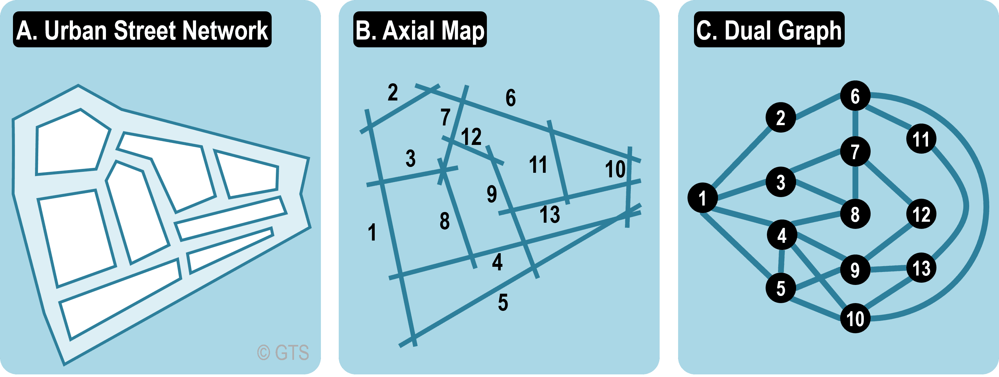

Urban landscapes such as streets, neighbourhoods, and cities can be examined as networks similar to biological systems, social interactions, or the Internet. A city can be visualised as a graph with roads and intersections creating a network of connections that affect mobility and accessibility.
There are difficulties when using the network technique in urban systems. The researchers have to make a decision:
The objective of the researcher was to investigate how the hidden structure of cities is revealed by two different kinds of graph: primal and dual graph.
The authors represent each city’s street network in two ways, one of which is the Dual Graph. This conventional method is helpful for metric and geographical analysis and maintains geographic distance.
The authors created a generalisation model known as Intersection Continuity Negotiation (ICN) to build the dual graph. Long or curving roads can be considered single, continuous nodes in the dual graph using this technique to determine the continuity of paths across many connected segments. Following the construction of the graphs, they analysed the structural features of the urban street networks using network analytic tools, including:
The results showed that, when analysed as dual graphs, urban street networks have many characteristics in common with other complex systems, including biological networks or the Internet. Specifically, the networks follow a power-law structure typical of self-organising systems, with most streets having few connections while a few major highways serve as hubs connecting many others.
Additionally, they show small-world characteristics: city networks, despite their complexity, allow short travel lengths between any two streets, indicating effective interaction. Unlike social networks, where highly connected hubs usually link with other hubs, urban networks exhibit a lack of variety. Major city roads frequently connect to smaller local streets, showing a unique urban connectivity pattern.
These results suggest that dual graph analysis offers a deeper comprehension of the development and operation of cities. The dual depiction emphasises the hierarchical and self-organising character of urban growth by moving away from geometric distances and focussing on interaction. By revealing the hidden topological structure of urban networks, this method enhances the primordial (planar) perspective, which shows the physical geometry of streets. When combined, the dual and primal viewpoints provide strong tools for modelling, evaluating, and enhancing the functionality and design of modern urban systems.
 *image just for visualisation does not correlate to the report
Porta, S., Crucitti, P., & Latora, V. (2006). The network analysis of urban streets: a dual approach. Physica A: Statistical Mechanics and its Applications, 369(2), 853–866.
"https://www.sciencedirect.com/science/article/pii/S0378437105009240"
https://transportgeography.org/contents/methods/graph-theory-definition-properties/dual-graph/